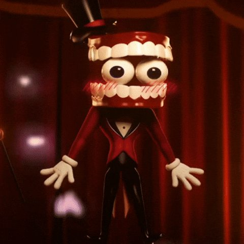
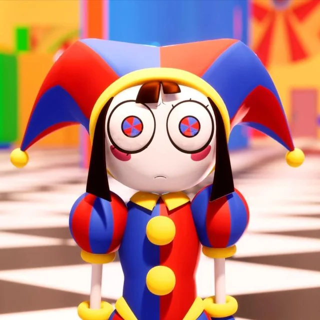
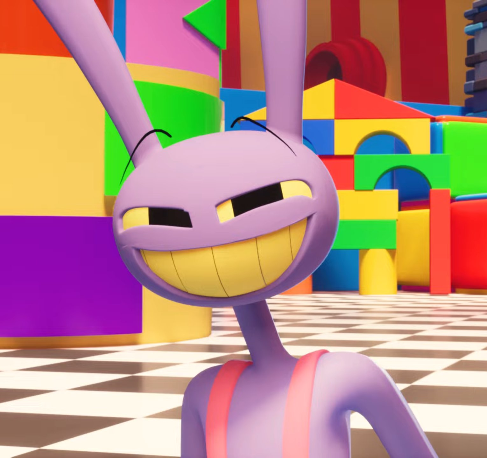
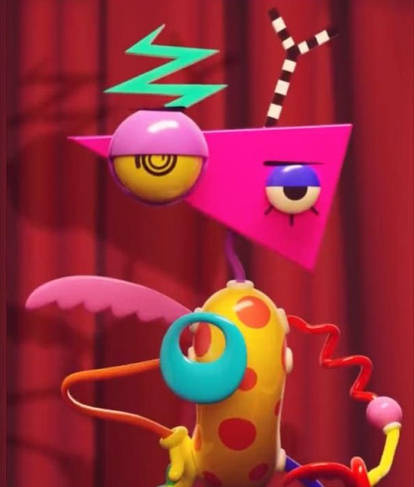

Um grupo de humanos presos em uma realidade virtual caótica. Eles são supervisionados por Caine, uma Inteligência Artificial errática e superpoderosa, e precisam lidar com traumas pessoais enquanto participam de aventuras bizarras para não enlouquecer
A série é inspirada em "I Have No Mouth, and I Must Scream", um conto pós-apocalíptico de ficção científica do escritor americano Harlan Ellison
📄LISTA DE PERSONAGENS
🔴Caine
⚪Bolha
🔵Pomni
🟠Ragatha
🟢Gangle
🟣Jax
🟡Kinger
🟤Zooble
CAINE(Caim)

🔴QUEM É_Caine é a inteligência artificial mestre de cerimônias de The Amazing Digital Circus. Ele cria aventuras absurdas para distraí-los e evitar que enlouqueçam, mas sua compreensão falha das emoções humanas muitas vezes gera caos.
🔴APARÊNCIA_ Com uma dentadura flutuante no lugar da cabeça, com globos oculares flutuantes — o esquerdo verde e o direito azul — que se movem de forma expressiva e é claro o traje de mestre de cerimônias.
BOLHA(Bubble)
⚪QUEM É_ O Bolha (conhecido como Bubble no original) é um NPC e o assistente de Caine em The Amazing Digital Circus. Apesar de seu visual fofo e de ser essencialmente o ajudante de Caim, o Bolha é conhecido por ter um comportamento peculiar, por vezes caótico e um pouco perturbador.
⚪APARÊNCIA_ Ele assume a forma de uma bolha viva e falante, servindo como o braço direito de Caim.
POMNI

🔵QUEM É_ Ela é uma humana que ficou presa em uma realidade virtual surreal após colocar um headset amaldiçoado. Desesperada e ansiosa, ela tenta escapar desse mundo bizarro comandado pela inteligência artificial Caine.
🔵APARÊNCIA_ Ela veste trajes de bobo da corte (palhaça) nas cores azul e vermelho, com um chapéu que possui guizos.
RAGATHA
🟠QUEM_ No início, ela demonstra ser a pessoa mais sociável e acolhedora, especialmente para com a recém-chegada Pomni. No entanto, seu otimismo extremo funciona como um filtro social para evitar conflitos. Apesar de sua simpatia, a personagem esconde uma camada mais sombria e misteriosa. Ela atua como a "irmã mais velha" ou cuidadora do grupo
🟠APARÊNCIA_ retratada como uma boneca de pano otimista e amigável.
GANGLE
🟢QUEM_ Uma dos 6 humanos presos, é uma personagem tímida, sensível, empática e que chora com facilidade. Ela é frequentemente vista desenhando, o que reflete sua veia artística.
🟢APARÊNCIA_ Ela é um avatar humanoide feito de fitas vermelhas que usa máscaras de teatro para expressar suas emoções.
JAX

🟣QUEM É_ Como os outros membros do circo, ele é um humano que ficou preso no mundo virtual após colocar um dispositivo de realidade virtual na vida real. É conhecido por ser o "valentão" do grupo. Ele frequentemente faz piadas com o sofrimento dos outros, demonstra pouca empatia e adora criar o caos.
🟣APARÊNCIA_ Ele aparece como um coelho roxo com macacão vermelho de desenho animado clássico, com olhos esbugalhados e expressão de deboche constante.
KINGER
🟡QUEM_ Ele é o membro mais antigo do grupo, devido ao seu longo tempo preso, ele é conhecido por suas atitudes excêntricas, comportamentos paranóicos, perda de memória e por se isolar em fortes de travesseiros.É marcado por ser uma dualidade: ele é ao mesmo tempo um alívio cômico paranoico e uma figura sábia e acolhedora.
🟡APARÊNCIA_ Assume a forma de uma peça de xadrez (um rei) com olhos humanos flutuantes.
ZOOBLE

🟤QUEM É_ Zooble é uma dos seis humanos presos na simulação de realidade virtual de The Amazing Digital Circus. Costuma demonstrar indiferença em relação aos eventos caóticos do circo e aos outros membros do elenco, descontando sua irritação na falta de liberdade.
🟤APARÊNCIA_ Aparência de brinquedo coloridas cujas peças podem ser desconectadas e remontadas.